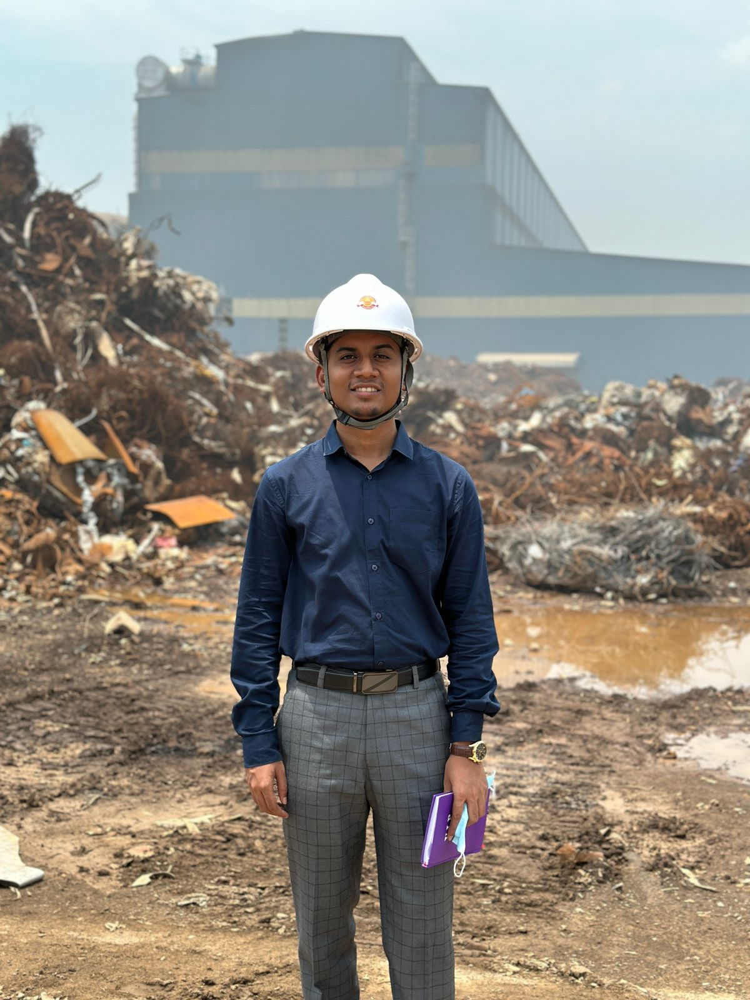
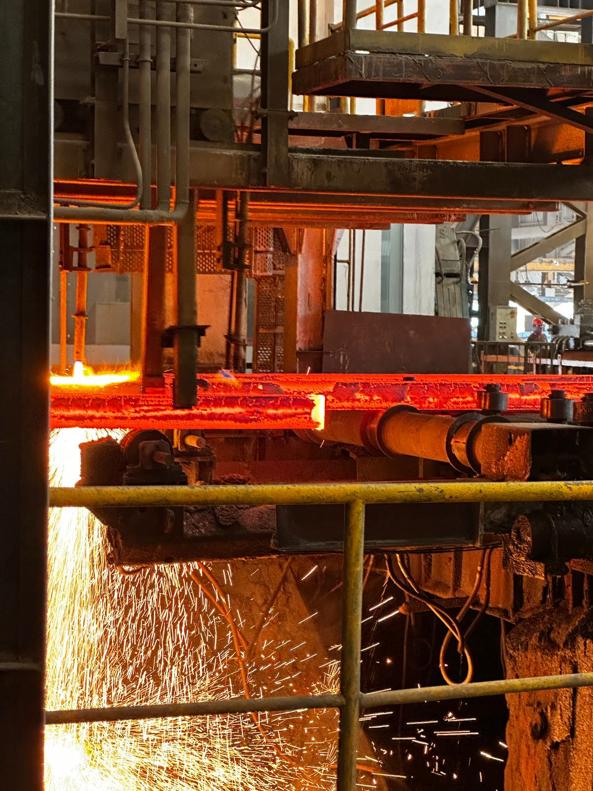
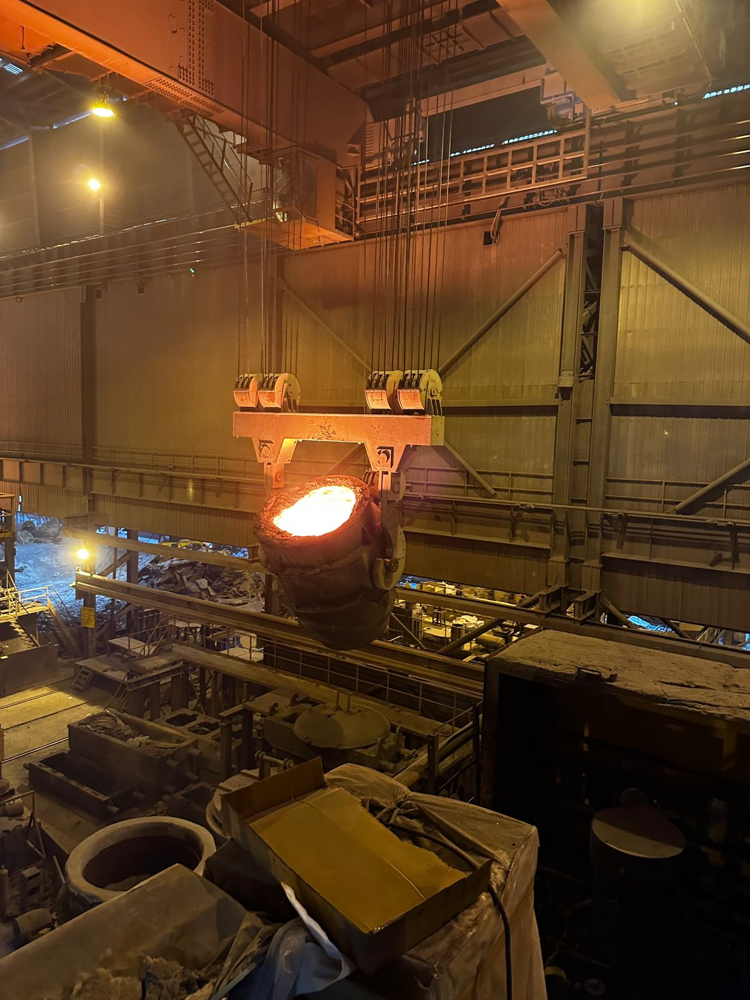

Experience
Work Experience
Graduate Engineer Trainee
Tex Fasteners - A renowned multinational Metal Zipper and Button Manufacturing Industry
Duration: December 2024 - Present
Industrial Attachment
BSRM Limited
The leading mild steel billet and rebar manufacturing company in Bangladesh
p>Duration: 7 DaysHands-on training covering the following areas:
- Raw material collection and scrap segregation
- Operation of induction furnaces
- Ladle refining furnace (LRF) practices
- Continuous casting process
- Refractory and crucible maintenance
- Quality control procedures
- Maintenance (electrical & mechanical)


